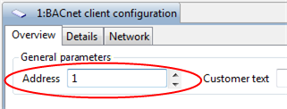

Supervise the Client Application via the FS20 BACnet Driver
You can use the BACnet driver to supervise the client application (the user interface) in the entire system.
If no client application is active, the driver generates an alert message on the fire panel.
NOTE: At the moment, the supervision of the Flex Client is not supported.
- The BACnet client supervision is enabled in the fire panel configuration.
- In System Browser, depending on whether the driver runs on the server or FEP station, select one of the following:
- Project > Management System > Servers > Main Server > Drivers > [BACnet driver]
- Project > Management System > FEPs > [FEP] > [drivers folder] > [BACnet driver] - Open the Settings expander.
- In the Acting as Supervised Fire Client section, select Enable.
- In the Client Number field, enter the Address of the BACnet client configuration set in the panel configuration tool (1 for the first configured client; 2 for the second configured client, and so on).
NOTE: The client numbers must start with 1 and be consecutive (2, 3, and so on). Make sure to adapt the sequence of numbers if for example you delete client 1.
